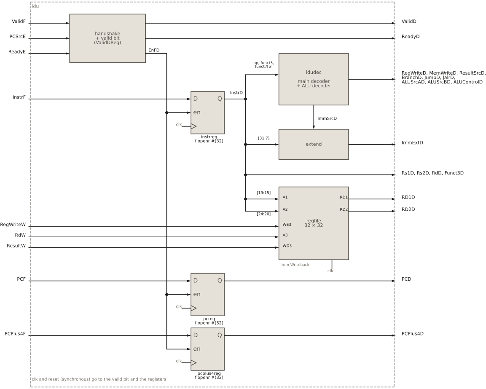
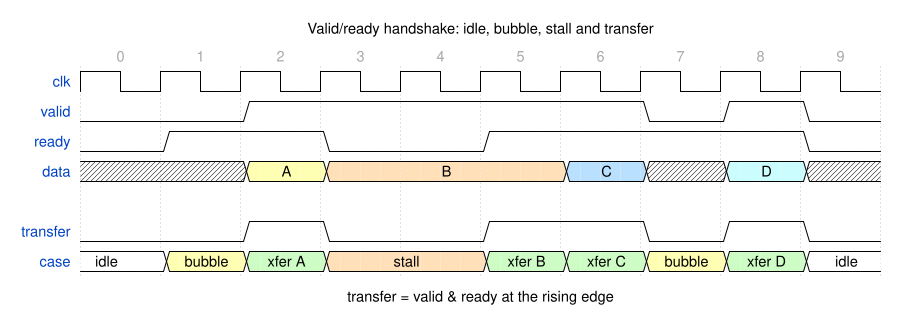
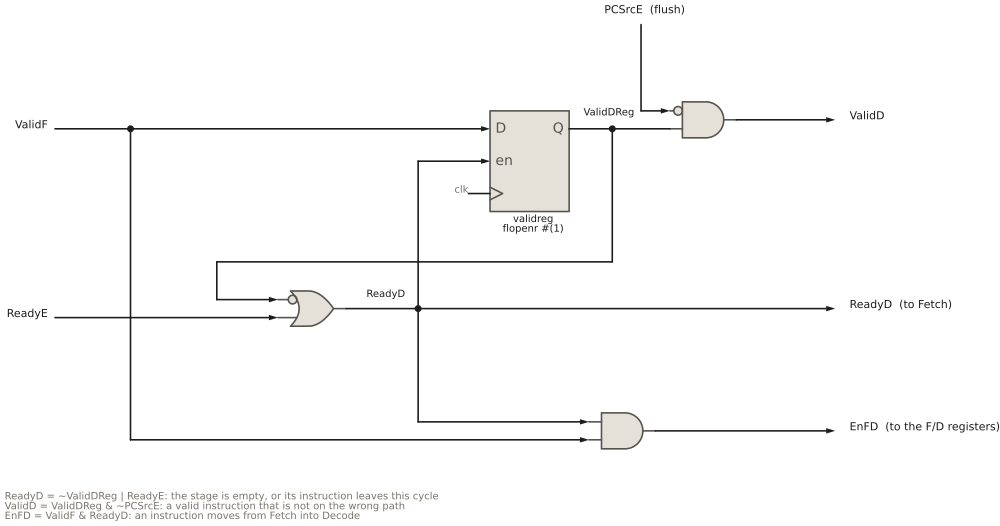

9 Instruction decode unit
Instruction decode unit
9.1 Goal for this week
- Know what the instruction decode unit (IDU) does, and which other parts of the core it talks to
- Understand the valid/ready handshake that connects all stages of HIPV, and how the IDU implements it
- Build the control decoder: from opcode,
funct3andfunct7to control signals - Build the immediate extension and the register file
9.2 Introduction
The instruction decode unit is the second stage of the HIPV pipeline. It is the place where hardware and software meet. Up to this point, an instruction is just 32 bits that Fetch has brought from memory; from here on, it is a set of control signals that tell the rest of the core what to do. The choice of the instruction set, RV32I, has a greater impact on this stage than on any other. Its formats decide where the register numbers sit in the instruction, how the immediate is scattered over the bits, and which opcodes exist. If you wanted to add a new instruction to HIPV, this is where you would start: give it an opcode in the decoder, and define the control signals it needs.
The IDU has three tasks:
- Decode the instruction: produce the control signals that steer the later stages, and hand them on together with the operands to the Execute stage.
- Extend the immediate: collect the immediate bits from the instruction and extend them to a 32-bit value.
- Access the register file: read the two source registers, which the later stages (the IEU and the Memory stage) use as operands. The register file is also written here, but the write comes from the Writeback stage, at the other end of the pipeline.
9.3 Interface of the IDU
The ports of the IDU fall into five groups: the handshake with Fetch and the data coming from it, the jump from Execute, the handshake with Execute, the write port of the register file driven by Writeback, and the stage outputs.
module idu (input logic clk, reset,
// handshake with the Fetch stage
input logic ValidF,
output logic ReadyD,
input logic [31:0] InstrF, PCF, PCPlus4F,
// flush on taken branch/jump resolved in Execute
input logic PCSrcE,
// handshake with the Execute stage
output logic ValidD,
input logic ReadyE,
// write port from the Writeback stage
input logic RegWriteW,
input logic [4:0] RdW,
input logic [31:0] ResultW,
// stage outputs to Execute
output logic [31:0] RD1D, RD2D, ImmExtD, PCD, PCPlus4D,
output logic [4:0] Rs1D, Rs2D, RdD,
output logic [2:0] Funct3D,
output logic RegWriteD, MemWriteD, BranchD, JumpD, JalrD,
output logic [1:0] ResultSrcD, ALUSrcAD,
output logic ALUSrcBD,
output logic [3:0] ALUControlD);- Handshake with Fetch and data from Fetch.
ValidFandReadyDagree on each transfer. The data is the instructionInstrFand its two addresses,PCFandPCPlus4F. - Jump from Execute. When
PCSrcEis high, Execute has taken a branch or a jump, and the instruction held in Decode was fetched from the wrong path. The IDU throws it away. - Handshake with Execute.
ValidDandReadyE, the same pair one stage further down. - Write port, from Writeback.
RegWriteW,RdWandResultWwrite a result into the register file. They belong to a different instruction, the one that is finishing in Writeback. - Stage outputs. The operands read from the register file (
RD1D,RD2D) and the immediate (ImmExtD); the register numbers to read and to write (Rs1D,Rs2D,RdD); the two addresses (PCD,PCPlus4D);Funct3D, which later stages still need to choose the branch condition and the memory access size; and the control signals.
9.4 Structure of the IDU

idudec), the immediate extension (extend) and the register file (regfile).
Figure 9.1 shows the IDU. It has five parts: the handshake logic, which decides when the stage takes a new instruction from Fetch; the pipeline registers, which hold that instruction; and three blocks that work on it in parallel: the control decoder idudec, the immediate extension extend, and the register file regfile. The register numbers and funct3 need no block at all: they are fixed bit fields of the instruction, and the IDU simply wires them out.
9.5 The valid/ready handshake
In the simplest pipeline, every stage hands its result to the next stage at every clock edge. That works only if every stage always finishes its work in exactly one cycle. HIPV is not like that. Fetch and the Memory stage talk to memories that answer when they are ready, which can take any number of cycles. Two things can therefore happen:
- A later stage is busy. A load in the Memory stage waits for its data, and the instruction behind it in Execute cannot move on. If Execute handed over its result anyway, the instruction in the Memory stage would be overwritten. The stages behind a busy stage must wait: this is a stall.
- An earlier stage has nothing to send. Fetch is still waiting for the instruction memory, so in this cycle Decode receives nothing. The empty slot that travels down the pipeline is a bubble.
The pipeline handles both with a handshake, a universal agreement between every two neighbouring stages: data moves from one stage to the next only when the sender has something to send and the receiver is able to take it. Each stage makes this decision locally, with its two neighbours, and does not need to know what is going on anywhere else.
9.5.1 Two signals
The handshake uses two control signals next to the data:
| Signal | Driven by | Meaning |
|---|---|---|
valid |
sender | The data output carries a real item, not leftovers from an earlier one or random bits after reset. |
ready |
receiver | The receiver can accept an item at the next clock edge. |
data |
sender | The item itself: an instruction with its operands and controls. It is meaningful only while valid is 1. |
An item is transferred at a rising clock edge where valid and ready are both 1. In HIPV the names carry the stage suffix: between Fetch and Decode the pair is ValidF and ReadyD, between Decode and Execute it is ValidD and ReadyE, and so on down the pipeline.
9.5.2 Four cases

valid and ready. An item is transferred in each cycle where both are high (transfer). In cycles 3 and 4 the receiver stalls, and the sender holds B until the transfer in cycle 5.
The two signals give four cases, and Figure 9.2 shows all of them:
valid |
ready |
Name | What happens |
|---|---|---|---|
| 0 | 0 | idle | The sender has nothing, and the receiver has no room. Nothing happens. |
| 0 | 1 | bubble | The receiver could take an item, but there is none. At the edge the receiver records that it has received nothing: an empty slot moves down the pipeline. |
| 1 | 0 | stall | The sender has an item, but the receiver cannot take it. The sender keeps its item and its outputs unchanged, and tries again in the next cycle. |
| 1 | 1 | transfer | The item moves to the receiver at the clock edge. In the next cycle the sender may offer a new item. |
The transfer case can repeat in every cycle, as in cycles 5 and 6 of the figure: when both sides are always ready, the handshake costs nothing, and the pipeline moves one item per cycle as if the handshake were not there.
9.5.3 Rules of the handshake
For the handshake to work, both sides follow four rules:
- Once
validis set, it holds until the transfer. The sender may not withdraw an item, or change it, while waiting forready. Otherwise the receiver could take a value that changes under it. validmust not depend onready. The sender decides on its own whether it has something to offer. Ifvalidwaited forready, and the receiver in turn madereadywait forvalid, neither would ever move. Combinational paths between the two would form a loop. The opposite direction is allowed:readymay depend onvalid.datais meaningful only whilevalidis 1. In between, the data lines may hold anything, and the receiver ignores them.- A transfer happens at one clock edge, and moves one item. If both signals stay high in the next cycle, that is a new transfer of the next item.
HIPV breaks rule 1 on purpose, in exactly one place. When Execute takes a jump, the instruction offered by Decode belongs to the wrong path, and Decode withdraws it by dropping ValidD, as we will see shortly. This is safe because at the same moment, everything behind the jump is being thrown away.
9.6 Handshake logic of the IDU

ReadyD tells Fetch that Decode can take a new instruction, EnFD loads the F/D registers, validreg remembers whether the stage holds a valid instruction, and PCSrcE hides it from Execute on a jump.
The handshake logic of the IDU is a few lines of code (Figure 9.3):
// F/D handshake: accept when the stage is empty or being drained
assign ReadyD = ~ValidDReg | ReadyE;
assign EnFD = ValidF & ReadyD;
assign ValidD = ValidDReg & ~PCSrcE;
// F/D valid bit
always_ff @(posedge clk)
if (reset) ValidDReg <= 1'b0;
else if (ReadyD) ValidDReg <= ValidF;The most important signal is EnFD, the transfer between Fetch and Decode: Fetch offers an instruction (ValidF) and Decode accepts it (ReadyD). It is the enable of the pipeline registers, so it is the moment the instruction enters Decode.
ReadyD says that Decode can accept a new instruction. That is true in two situations:
- The stage is empty,
~ValidDReg: it holds no valid instruction, so there is nothing to lose. - The stage is being drained,
ReadyE: Execute takes the instruction that Decode holds at this very edge, so its place is freed and can be refilled at the same edge. This is what lets the pipeline move one instruction per cycle. When Execute stalls,ReadyEis 0, and with a valid instruction in Decode,ReadyDis 0 too: the stall propagates backwards, to Fetch.
ValidDReg is the valid bit of the stage, a one-bit register that says whether the pipeline registers hold a real instruction. It is a delayed copy of ValidF: whenever the stage can accept something (ReadyD), it stores ValidF, so it becomes 1 when an instruction arrives and 0 when a bubble arrives.
Why keep a register for it, instead of using ValidF directly? Because the valid signal must travel through the pipeline at the same pace as the data it labels. ValidF describes InstrF, the instruction on the output of Fetch in this cycle. After the edge, that instruction sits in InstrD, and Fetch may already be working on the next one, with a different ValidF. The label must therefore be stored at the same edge, and in a register next to the data, so that ValidDReg always describes what is in InstrD. The same happens in every stage: each pipeline register has its valid bit, and an instruction and its valid bit always move together.
Note the small difference between the two enables. The data registers load on EnFD, only when an instruction actually arrives. The valid bit loads on ReadyD, also when a bubble arrives. In that case the data registers keep the old instruction, which has already moved to Execute, and the valid bit becomes 0 to mark it as stale. Rule 3 of the handshake makes this safe: nobody looks at the data while the valid bit is 0.
ValidD offers the instruction to Execute. It is the valid bit, with one exception: when PCSrcE is high, Execute has taken a jump, and the instruction in Decode is the one fetched after the jump, on the wrong path. ValidD drops at once, in the same cycle, so Execute never takes it. At the following edge the valid bit is cleared as well. This needs no extra logic: on a jump, Fetch also drops ValidF, and since the jump leaves Execute at this edge (PCSrcE implies ReadyE), ReadyD is 1, and the valid bit loads the 0 from ValidF. The instruction has become a bubble, which is called a flush.
9.7 Pipeline registers
The F/D pipeline registers store the instruction and its two addresses. They are three instances of the generic flopenr, all with the same enable, EnFD:
// F/D pipeline registers
flopenr #(32) instrreg(.clk(clk), .reset(reset), .en(EnFD), .D(InstrF), .Q(InstrD));
flopenr #(32) pcreg(.clk(clk), .reset(reset), .en(EnFD), .D(PCF), .Q(PCD));
flopenr #(32) pcplus4reg(.clk(clk), .reset(reset), .en(EnFD), .D(PCPlus4F), .Q(PCPlus4D));Each register does one of two things at a clock edge:
- update: when
EnFDis 1, it stores the new value from Fetch; - hold: when
EnFDis 0, it keeps its current value.
The enable is the key component that makes the pipeline elastic. Without it, the register would load a new value at every edge, and a stall would lose the instruction. With it, the instruction in Decode simply stays where it is, with all the outputs computed from it stable, for as long as Execute is not ready to take it.
The IDU stores only three values. Everything else it produces (the control signals, the immediate, the register operands) is computed from InstrD by combinational logic, in the cycle the instruction is in Decode, and stored only in the next pipeline register, at the entry to Execute.
9.8 Instruction fields
RV32I is designed so that decoding is easy. In every format that has them, the register numbers and funct3 sit at the same bit positions, so the IDU can extract them with plain wiring, before it even knows what kind of instruction it holds:
// instruction fields
assign Rs1D = InstrD[19:15];
assign Rs2D = InstrD[24:20];
assign RdD = InstrD[11:7];
assign Funct3D = InstrD[14:12];The six RV32I formats differ only in which of these fields they use and how they place the immediate:
| Format | 31:25 | 24:20 | 19:15 | 14:12 | 11:7 | 6:0 |
|---|---|---|---|---|---|---|
| R | funct7 |
rs2 |
rs1 |
funct3 |
rd |
opcode |
| I | imm[11:5] |
imm[4:0] |
rs1 |
funct3 |
rd |
opcode |
| S | imm[11:5] |
rs2 |
rs1 |
funct3 |
imm[4:0] |
opcode |
| B | imm[12,10:5] |
rs2 |
rs1 |
funct3 |
imm[4:1,11] |
opcode |
| U | imm[31:25] |
imm[24:20] |
imm[19:15] |
imm[14:12] |
rd |
opcode |
| J | imm[20,10:5] |
imm[4:1,11] |
imm[19:15] |
imm[14:12] |
rd |
opcode |
For an instruction that does not use a field, the extracted value is meaningless. For a store, RdD holds immediate bits. That is harmless, because the control signals say which fields count: a store has RegWriteD = 0, so its RdD is never used to write a register.
9.9 The control decoder
The task of the decoder, idudec, is to generate the control signals for the instruction. It looks at three parts of the instruction:
- the opcode, bits 6:0, which says what kind of instruction it is: a register–register operation, a load, a branch, …;
funct3, bits 14:12, which distinguishes the ALU operations within one opcode (add,xor,sll, …), and, for branches and memory accesses, the condition and the size;funct7[5], bit 30 of the instruction, calledFunct7b5D, which distinguishes the two pairs of operations that sharefunct3:addfromsubandsrlfromsra.
From them it produces the control signals for every later part of the core:
| Signal | Width | For | Meaning |
|---|---|---|---|
ALUControlD |
4 | ALU | which of the ten operations |
ALUSrcAD |
2 | ALU | operand A: register, PC or zero |
ALUSrcBD |
1 | ALU | operand B: register or immediate |
BranchD |
1 | Execute | a conditional branch |
JumpD, JalrD |
1 | Execute | jal, jalr |
MemWriteD |
1 | Memory | a store |
ResultSrcD |
2 | Writeback | what to write back: ALU result, loaded data, or PC + 4 |
RegWriteD |
1 | Writeback | the instruction writes rd |
ImmSrcD |
3 | extend (here) |
the immediate format |
Only ImmSrcD is used in Decode itself. All other signals travel down the pipeline with the instruction, and each is used in the stage named in the table.
9.9.1 The HIPV package
The decoder produces encoded signals, such as ALUControlD = 4'b0001 for a subtraction, and the IEU must interpret them in exactly the same way. If each module wrote its own numbers, a change on one side would silently break the other. HIPV therefore keeps all encodings in one place, a package. A package is a named collection of declarations (constants, types, functions) that does not describe hardware by itself, but can be used by any module. The HIPV package, config/hipv_pkg.sv, defines the encodings of all control signals and the RV32I opcodes as localparam constants. For example, the immediate formats and the opcodes:
package hipv_pkg;
...
// immediate format select (ImmSrc)
localparam logic [2:0] IMM_I = 3'b000;
localparam logic [2:0] IMM_S = 3'b001;
localparam logic [2:0] IMM_B = 3'b010;
localparam logic [2:0] IMM_J = 3'b011;
localparam logic [2:0] IMM_U = 3'b100;
...
// RV32I opcodes
localparam logic [6:0] OP_RTYPE = 7'b0110011;
localparam logic [6:0] OP_IALU = 7'b0010011;
localparam logic [6:0] OP_LOAD = 7'b0000011;
localparam logic [6:0] OP_STORE = 7'b0100011;
localparam logic [6:0] OP_BRANCH = 7'b1100011;
localparam logic [6:0] OP_JAL = 7'b1101111;
localparam logic [6:0] OP_JALR = 7'b1100111;
localparam logic [6:0] OP_LUI = 7'b0110111;
localparam logic [6:0] OP_AUIPC = 7'b0010111;
endpackageA module that needs the constants imports the package at the top of its body:
module idudec (...);
import hipv_pkg::*;hipv_pkg::* makes every name of the package visible in the module, so the code can write OP_LOAD instead of 7'b0000011. The decoder (idudec), the extension unit (extend), the ALU (alu) and the IEU all import the same package, so they always agree on the encodings. The code also becomes readable: ResultSrcD = RESULT_MEM says what it means, while ResultSrcD = 2'b01 does not. The package must be compiled before the modules that import it, which is why it comes first in the file lists of the simulation and synthesis scripts.
9.9.2 The control word
The decoder has a dozen output signals, and each opcode must set all of them. Rather than assigning each signal separately in every branch, the decoder collects them into one vector, the control word:
logic [14:0] ControlsD;
logic [1:0] ALUOpD;
assign {RegWriteD, ImmSrcD, ALUSrcAD, ALUSrcBD, MemWriteD, ResultSrcD,
BranchD, JumpD, JalrD, ALUOpD} = ControlsD;This is the concatenation operator on the left-hand side of an assignment, which we met in the SystemVerilog basics to catch the carry of an adder: assign {carry_out, sum} = a + b;. On the right of an assignment, {} joins signals into one vector. On the left, it does the reverse: it splits a vector into pieces and assigns each piece to one signal, from the most significant bit down. The widths add up to 15:
| Signal | RegWriteD |
ImmSrcD |
ALUSrcAD |
ALUSrcBD |
MemWriteD |
ResultSrcD |
BranchD |
JumpD |
JalrD |
ALUOpD |
|---|---|---|---|---|---|---|---|---|---|---|
| Width | 1 | 3 | 2 | 1 | 1 | 2 | 1 | 1 | 1 | 2 |
Bits of ControlsD |
14 | 13:11 | 10:9 | 8 | 7 | 6:5 | 4 | 3 | 2 | 1:0 |
The assignment is pure wiring, without any gates. Its benefit is in the code that drives ControlsD: each opcode needs just one line, and that line reads like a row of a table.
9.9.3 The main decoder
The main decoder is one case on the opcode, inside always_comb. Each branch assigns the whole control word, using the package names for the encoded fields:
// main decoder
// RegWrite ImmSrc SrcA SrcB MemWrite ResultSrc Branch Jump Jalr ALUOp
always_comb
case (OpD)
OP_RTYPE: ControlsD = {1'b1, IMM_I, SRCA_RF, 1'b0, 1'b0, RESULT_ALU, 1'b0, 1'b0, 1'b0, 2'b10};
OP_IALU: ControlsD = {1'b1, IMM_I, SRCA_RF, 1'b1, 1'b0, RESULT_ALU, 1'b0, 1'b0, 1'b0, 2'b10};
OP_LOAD: ControlsD = {1'b1, IMM_I, SRCA_RF, 1'b1, 1'b0, RESULT_MEM, 1'b0, 1'b0, 1'b0, 2'b00};
OP_STORE: ControlsD = {1'b0, IMM_S, SRCA_RF, 1'b1, 1'b1, RESULT_ALU, 1'b0, 1'b0, 1'b0, 2'b00};
OP_BRANCH: ControlsD = {1'b0, IMM_B, SRCA_RF, 1'b0, 1'b0, RESULT_ALU, 1'b1, 1'b0, 1'b0, 2'b01};
OP_JAL: ControlsD = {1'b1, IMM_J, SRCA_RF, 1'b0, 1'b0, RESULT_PC4, 1'b0, 1'b1, 1'b0, 2'b00};
OP_JALR: ControlsD = {1'b1, IMM_I, SRCA_RF, 1'b1, 1'b0, RESULT_PC4, 1'b0, 1'b0, 1'b1, 2'b00};
OP_LUI: ControlsD = {1'b1, IMM_U, SRCA_ZERO, 1'b1, 1'b0, RESULT_ALU, 1'b0, 1'b0, 1'b0, 2'b00};
OP_AUIPC: ControlsD = {1'b1, IMM_U, SRCA_PC, 1'b1, 1'b0, RESULT_ALU, 1'b0, 1'b0, 1'b0, 2'b00};
default: ControlsD = 15'b0; // unimplemented opcode: nop
endcaseEach row is the complete recipe for one kind of instruction. Read the load row from left to right: it writes a register; its immediate has the I format; the ALU adds the register rs1 and the immediate, which gives the address; it does not write memory; the value written back is the loaded data; and it is neither a branch nor a jump. A store differs in the immediate format (S), in writing memory, and in not writing a register.
Some fields do not matter for some instructions, and the table simply fills them with a harmless value. An R-type instruction has no immediate, so its ImmSrcD is arbitrary. A store or branch does not write back, so its ResultSrcD is arbitrary. A few choices are worth noting:
jalandjalrwrite the return address, so theirResultSrcDisRESULT_PC4. Their targets are computed in Execute:jaluses the dedicatedPC + immadder, whilejalruses the ALU to addrs1and the immediate, which is why onlyjalrsetsALUSrcBD.luiandauipcboth add the U immediate in the ALU. They differ only in operand A: zero forlui, the PC forauipc.- Opcodes that HIPV does not implement, such as
fenceand the system instructions, fall intodefaultand get an all-zero control word. It writes nothing, stores nothing, and does not jump, so the instruction passes through the pipeline as a no-op.
ALUOpD is not a final ALU operation, but a hint for the second part of the decoder: 10 means “the operation is given by funct3 and funct7”, and 00 means “just add”.
9.9.4 The ALU decoder
The ALU decoder turns ALUOpD, funct3 and funct7[5] into the final ALUControlD:
// sub only exists as an R-type encoding (addi has no subi)
assign RtypeSubD = Funct7b5D & OpD[5];
// ALU decoder
always_comb
if (ALUOpD == 2'b10)
case (Funct3D)
3'b000: ALUControlD = RtypeSubD ? ALU_SUB : ALU_ADD;
3'b001: ALUControlD = ALU_SLL;
3'b010: ALUControlD = ALU_SLT;
3'b011: ALUControlD = ALU_SLTU;
3'b100: ALUControlD = ALU_XOR;
3'b101: ALUControlD = Funct7b5D ? ALU_SRA : ALU_SRL;
3'b110: ALUControlD = ALU_OR;
default: ALUControlD = ALU_AND;
endcase
else ALUControlD = ALU_ADD; // address / target computationFor the arithmetic instructions (ALUOpD = 10), funct3 selects the operation directly, and it does so in the same way for the R-type and the I-type form: add and addi both have funct3 = 000, xor and xori both 100. For every other instruction, the ALU adds: a load or store computes its address, jalr its target, lui and auipc their results. A branch has ALUOpD = 01, but it also gets ADD. Its condition is evaluated by the branch comparator, so the ALU result is not used.
Two values of funct3 need bit 30 as well. For funct3 = 101, it separates the arithmetic shift sra/srai from the logical shift srl/srli. This works for both forms, because in srai the immediate’s upper bits are a fixed funct7 pattern, with bit 30 set. For funct3 = 000 it separates sub from add, but only for R-type instructions. In addi, bit 30 is an ordinary immediate bit, and addi x1, x1, -1024 has it set, yet must still add. OpD[5] is 1 for the R-type opcode 0110011 and 0 for the I-type 0010011, so RtypeSubD = Funct7b5D & OpD[5] selects sub only where it exists.
9.10 Immediate extension
The datapath of HIPV is 32 bits wide, but an immediate in an instruction has at most 20 bits, and it is split across the instruction differently in each format. The extension unit extend collects the bits of the immediate and extends them to a 32-bit value. The decoder tells it which format to use, with ImmSrcD:
module extend (input logic [31:7] InstrD,
input logic [2:0] ImmSrcD,
output logic [31:0] ImmExtD);
import hipv_pkg::*;
always_comb
case (ImmSrcD)
IMM_I: ImmExtD = {{20{InstrD[31]}}, InstrD[31:20]};
IMM_S: ImmExtD = {{20{InstrD[31]}}, InstrD[31:25], InstrD[11:7]};
IMM_B: ImmExtD = {{20{InstrD[31]}}, InstrD[7], InstrD[30:25], InstrD[11:8], 1'b0};
IMM_J: ImmExtD = {{12{InstrD[31]}}, InstrD[19:12], InstrD[20], InstrD[30:21], 1'b0};
IMM_U: ImmExtD = {InstrD[31:12], 12'b0};
default: ImmExtD = 32'b0;
endcase
endmoduleEach line is a concatenation that follows the format table from the section on instruction fields:
- I (arithmetic immediates, loads,
jalr): the 12 bits 31:20. - S (stores): the same 12-bit immediate, but split in two, because bits 11:7 hold
rdin other formats andrs2takes bits 24:20. The two pieces are joined again. - B (branches): a 13-bit offset whose lowest bit is always 0, because instructions start at even addresses. That bit is not stored; the code appends
1'b0. The other bits are scattered so that most of them sit where they sit in the S format. - J (
jal): a 21-bit offset, also with bit 0 appended as 0. - U (
lui,auipc): the upper 20 bits of a 32-bit value. They are placed at the top and the lower 12 bits are filled with zeros, so there is nothing to extend.
All the other immediates are sign-extended: they are two’s-complement numbers, so addi x1, x1, -1 and a backward branch work. Sign extension copies the sign bit into all the new upper bits, and the replication operator {20{InstrD[31]}} does exactly that. The sign bit is always bit 31 of the instruction, in every format. RISC-V placed it there on purpose: the extension can start replicating the sign before it even knows the format.
The input is InstrD[31:7], because the opcode bits 6:0 never contain any part of an immediate. The scrambled bit order in B and J looks strange in the code, but in hardware it costs nothing: each output bit is a wire from one input bit, chosen by a multiplexer of at most five inputs.
9.11 Register file
The register file holds the 32 registers x0 to x31 of RV32I, each 32 bits wide. It has two read ports, because an instruction reads up to two source registers, and one write port, because it writes at most one destination register:
module regfile (input logic clk,
input logic WE3,
input logic [4:0] A1, A2, A3,
input logic [31:0] WD3,
output logic [31:0] RD1, RD2);
logic [31:0] RF[31:0];
// synchronous write port (writes to x0 are ignored)
always_ff @(posedge clk)
if (WE3 & (A3 != 5'b0)) RF[A3] <= WD3;
// combinational read ports with write-first bypass
assign RD1 = (A1 == 5'b0) ? 32'b0 : (WE3 & (A1 == A3)) ? WD3 : RF[A1];
assign RD2 = (A2 == 5'b0) ? 32'b0 : (WE3 & (A2 == A3)) ? WD3 : RF[A2];
endmoduleIn the IDU, the read addresses are the register numbers of the instruction in Decode, and the write port is connected to the Writeback stage:
regfile rf(.clk(clk), .WE3(RegWriteW), .A1(Rs1D), .A2(Rs2D), .A3(RdW),
.WD3(ResultW), .RD1(RD1D), .RD2(RD2D));9.11.1 Storage: an array of registers
The registers are declared as an array:
logic [31:0] RF[31:0];The range before the name, [31:0], is the width of one element: a 32-bit vector, as in every declaration so far. The range after the name is new: it makes 32 such elements, RF[0] to RF[31]. In hardware, this is 32 registers of 32 flip-flops each, 1024 flip-flops in total. The array is not reset, so after power-up the registers hold unknown values. Software must write a register before it reads it, as it must on any processor.
The array is indexed with a signal, not a constant: RF[A1] is the register whose number is the current value of A1. This is relative addressing: the code does not name a register, but says “the one that A1 points to”. In hardware there is no addressing logic as in memory; the synthesis tool turns RF[A1] into a 32-to-1 multiplexer with all 32 registers as inputs and A1 as the select. Each read port is one such multiplexer, 32 bits wide.
9.11.2 Writing and reading
Writing is synchronous. The always_ff block stores WD3 in register A3 at the rising clock edge, if the write enable WE3 is 1. The extra condition A3 != 0 protects x0, which RISC-V defines as constant zero: an instruction may name x0 as its destination, but the result is discarded. addi x0, x0, 0, the canonical no-op, relies on it.
Reading is asynchronous, that is, combinational: RD1 and RD2 follow A1 and A2 within the same cycle, with no clock involved. As soon as an instruction enters Decode, its register numbers select the operands, and they are ready by the end of the cycle, in time to be stored in the D/E pipeline register. Each read port checks two special cases before it reads the array:
- If the address is 0, the result is 0. Since
x0is never written, its array entry would hold an unknown value from power-up; the check makes sure thatx0reads as zero. - If the register is being written in this very cycle (
WE3 & (A1 == A3)), the result is the value being written,WD3, rather than the old value in the array. This is called write-first behavior.
The write-first bypass solves a timing problem of the pipeline. The register file is written at the end of the cycle, at the clock edge, but it is read during the cycle. Without the bypass, an instruction in Decode that reads a register written by an instruction in Writeback in the same cycle would get the old value:
add x5, x1, x2 # in Writeback: writes x5 at the end of this cycle
sub x6, x7, x8
or x9, x6, x0
and x3, x5, x4 # in Decode: reads x5 in the same cycleThe instructions between them are three apart, too far for forwarding in Execute, which reaches only the Memory and Writeback stages. With the bypass, and receives the new value of x5 straight from ResultW. Together with forwarding, this covers every distance between a producer and its consumer.
9.12 Summary
The IDU turns the 32 bits of an instruction into everything the later stages need: control signals, a 32-bit immediate, and two register operands. Most of it is combinational logic that works in parallel on the instruction held in the F/D register: field extraction by wiring, the decoder, the extension unit, and the read ports of the register file.
The decoder has two levels: the main decoder maps the opcode to a control word in a single table-like case, and the ALU decoder refines the ALU operation from funct3 and bit 30. All encodings come from the shared package hipv_pkg, so Decode and Execute always agree on them.
The IDU is also the first stage that receives instructions over the valid/ready handshake. This mechanism connects every pair of stages in HIPV: a sender offers an item with valid, a receiver accepts it with ready, and the item moves at the edge where both are high. A valid bit travels with each instruction, a stall propagates backwards through ready, and a jump turns the instruction in Decode into a bubble.